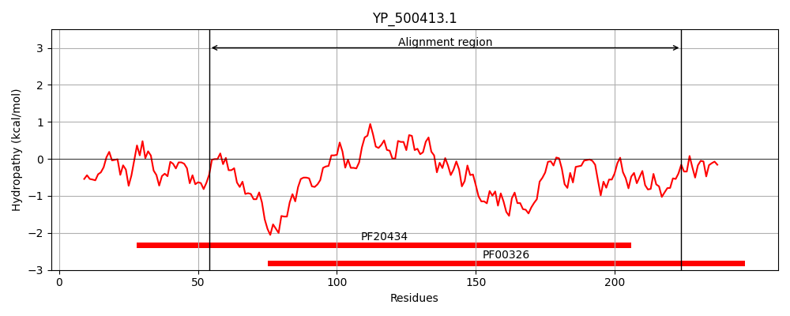
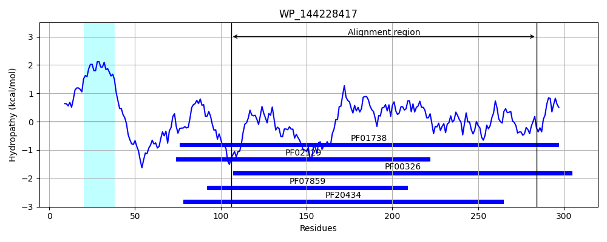
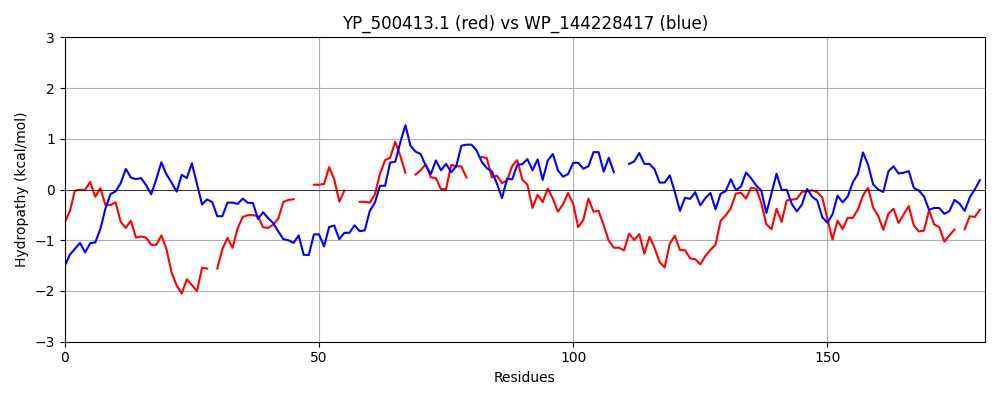

Hit Accession: WP_144228417
Hit TCID: 4.C.3.1.11
Hit Description: gnl|BL_ORD_ID|21925 gnl|TC-DB|WP_144228417.1|4.C.3.1.11 alpha/beta hydrolase fold domain-containing protein [Opitutaceae bacterium 53C-WASEF]
Mach Len: 181
e:0.000228
Query TMS Count : 0
Hit TMS Count: 1
TMS-Overlap Score: 0.000000
Predicted Substrates:None
BLAST Alignment:
Score: 95 , Bit scores: 41 bits, E-value: 2.3e-04, Alignment length: 181, Percentage identity: 27
Query: 54 RLMQFSDSQTLVIGPYYRGNNGSEGKDEF-YRGDLNDVTQLLRLLH---DKYPHAF--IHMVGFSRGG-LQGLLTFQDLP--VTSYTIWGGVSDIDLMYEERVDLRGMLRRMIGHPKKDRAAYEARQAIPNINENSPPILIVHGGKDQQVGIHHAYYLADQLELKGATHETFYQMA-EGHV 224
R S ++ L Y N G F Y + D+ + LR LH D+Y + G+S GG L L+ D P + I G + DL DL + G + A + I +I+ SPP+ + H G D+ V HA L G +HE Y + GH+
Sbjct: 106 RYQMKSIAKQLAARGYVVMNAAYRGAPAFTYPAPVEDLREALRWLHAHADEYRLRTDRVATFGYSAGGHLAALVGLMDGPPELRVQAIVAGGAPSDLTLYPGGDLVPAF--LGGTIDQIPATFREASPINHISAGSPPVFLYHAGNDKLVPTEHAVRFEAALTAAGVSHEPVYWIKNRGHI 284 | Protein Hydropathy Plots: |
|---|
|  |  |
Pairwise Alignment-Hydropathy Plot:
|
|---|
|  |